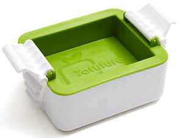

Blocks of tofu come packed in tubs of water. This protects the tender tofu from mechanical damage, and keeps it fresh. When I first started using tofu, it only lasted a few days in an unopened tub, but today, it lasts for weeks, even months. But for use, especially in Japan, it is generally pressed to remove a lot of the packing water. This makes if firmer, and makes it more readily absorb flavors from the ingredients it is cooked with.
There are quite a few Tofu Presses on the market. I chose this Bamboo Press, because it is so picturesque, and it will easily serve my needs, as for me, Tofu is an occasional item. There are plastic ones that are easier to use and easier to clean.
More on Japanese Kitchen Gear

This Tofu Press seems very well thought of. Pressure is provided by
silicone rubber bands and it isn't much bigger than the block of tofu, so
it won't take too much fridge space. It sells for about 2022 US $25.15.
Photo ©source
Tofuture Ltd..